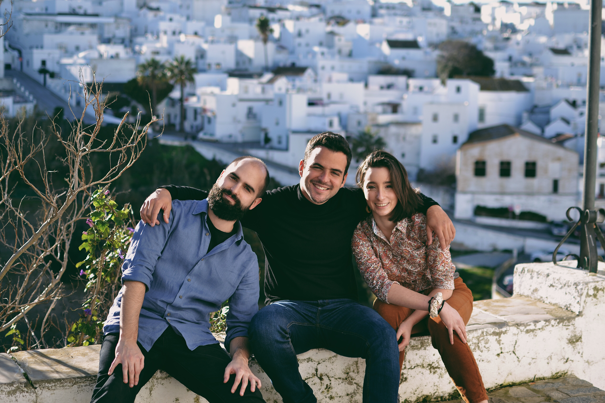

El trío

Como si de un caleidoscopio sonoro se tratara, el Trío Levante armoniza tres espejos: El clarinete, la viola y el piano
Galería
{kind=link}
{kind=link}
{kind=link}

Pablo nace en Cádiz en 1993. Comienza a tocar el clarinete a la edad de 8 años en el Conservatorio Profesional de Música “Manuel de Falla”, y más tarde realiza sus estudios superiores en Sevilla en el Conservatorio Superior de Música “Manuel Castillo” con Francisco José Cantó, y en la Academia de Estudios Orquestales de la Fundación “Barenboim-Said” con Piotr Szymyslik y Miguel Domínguez. Asiste a clases de perfeccionamiento con Antonio Salguero y en el año 2017 comienza su máster en el Conservatorium van Amsterdam, donde finaliza sus estudios en la clase de Harmen de Boer, estudiando también con los profesores Hans Colber y Arno Piters. Ha sido miembro de orquestas jóvenes y academias como Orquesta de la Academia de Estudios Orquestales de la Fundación Barenboim-Saïd, Orquesta del Bicentenario de Cádiz o la Academia Orquestal de Málaga. Además reúne cierta trayectoria con orquestas profesionales, habiendo colaborado con Kamerorkest van het Noorden y Nationaal Symfonisch Kamerorkest (Países Bajos), Louis Spohr Kammerorchester (Alemania) y Armenian State Symphony Orchestra Armenia, actuando en prestigiosas salas como Philharmonie en Berlín, Muziekgebouw en Ámsterdam, Musikverein en Viena, Barbican Hall en Londres o el Dvorak Hall en Rudolfinum, Praga. Ha trabajado con solistas y directores de distinguida trayectoria como Maxim Vengerov, Manuel Hernández Silva, Andrew Grams, John Axelrold o Sergei Smbatyan. Ha recibido premios y distinciones en música de cámara como el Tercer Premio en la segunda edición del Concurso Nacional de Música de Cámara “Abate Marchena” (2019) y el Premio Especial “Abate Marchena” del jurado junto al Trío Viniegra, en la misma edición. Durante toda su carrera, se mantiene en contacto con diferentes clarinetistas y músicos de renombre tales como Michel Arrignon, Christoffer Sundqvist, Vicent Alberola, José Luis Estellés (OCG, Musikene), Ildefonso Moreno (Orquesta Sinfónica de Madrid), Davide Lattuada, Nicholas Cox o Pablo Barragán. Con el mismo propósito de adquirir motivación, perspectiva e inspiración, Pablo ha participado en clases magistrales y conferencias de gran cantidad de artistas, no necesariamente ligados al mundo de la música clásica, como Paquito d’Rivera, Brad Meldhau Carles Benavent, Joris Roelofs o Daniel Doña.
Elisa nace en el 2000 en El Puerto de Santa María (Cádiz). Comienza a tocar la viola a la edad de siete, en el Conservatorio Elemental de Música Rafael Taboada. No obstante, toma contacto con la música desde muy temprana edad, a través de clases de piano y solfeo. Continúa el grado medio en el Conservatorio Profesional de Música Manuel de Falla, bajo la tutela de Eva Navarro. Acompaña sus dos últimos cursos de este grado junto a su formación en la Academia de Estudios Orquestales Barenboim-Saïd en Sevilla, con el violista Jerome Ireland. Al acabar sus estudios profesionales, recibe el premio por excelencia de enseñanzas profesionales de música del curso 2017/2018, por la Junta de Andalucía. A la edad de diecisiete, comienza sus estudios superiores en el Conservatorium van Amsterdam con los profesores Sven Arne Tepl, Judith Wijzenbeek y Francien Schatborn, junto a Frederik Boits (Concertgebouw Orchestra) como profesor periódico de extractos orquestales. Hasta la fecha, ha experimentado gran actividad orquestal bajo las manos de grandes directores como Enrico Casazza, Manuel Hernandez Silva o Pedro Halffter. Colaboró con la Orquesta Joven de Andalucía, la Orquesta de la Academia Barenboim-Saïd y la Joven Orquesta Barroca de Sevilla, entre otras. También ha colaborado con la Orquesta profesional Barroca de Sevilla. Obtuvo segundo premio en la modalidad de solista en el concurso del Conservatorio Profesional de Música Manuel de Falla, cuya final tuvo lugar con acompañamiento orquestal. Junto a esta ocasión, ha actuado otras cinco veces como solista en orquestas jóvenes interpretando Telemann, Hoffmeister y Weber. Cuenta con varios premios en la modalidad de música de cámara como primer premio en Maassluis Chamber Music Competition junto al Sphere Quartet, o un tercer premio en la modalidad camerística del R.C.P.M. Manuel de Falla con el Vibass duo. Elisa ha recibido cursos de perfeccionamiento y masterclases de profesores como Laure Gaudron, Jonathan Brown, Natalia Tchitch, Joaquín Riquelme, Nobuko Imai, Bruno Giuranna y Lilli Maijala entre otros. Actualmente toca una viola checa del 1994 del luthier Jan B. Spidlen, cedida por la Nationaal Muziekinstrumenten Fonds en Holanda.
Nacido en Granada en 1995, Santiago Suárez toma el primer contacto con la música a los 5 años en la Escuela Municipal de Vejer (Cádiz) de la mano de Aureliano Ferrero. Tras pasar varios años experimentando y conociendo varios instrumentos decide focalizar sus estudios musicales en el piano y accede al Conservatorio Profesional de Música Manuel De Falla en el curso 2012/2013 con la preparación de Rafael Foncubierta. Desde ese momento se forma en las bases técnicas y estilísticas de la interpretación bajo la tutela de Diana López Rodríguez, recibiendo puntualmente clases de diversos maestros de prestigio internacional como Guillermo González, Benedicte Palko, Javier Herreros, Miriam Gomez-Moran, Graham Jackson, Patrin García-Barredo, Ángel Sanzo, Luis Fernando Pérez o Konrad Elser. Posteriormente accede a cursar los estudios superiores de música en el Conservatorio Superior de Castilla y León, en Salamanca. En este lugar se forma bajo las enseñanzas de grandes pedagogos como Patrin García-Barredo, en el ámbito del repertorio clásico, Alberto Rosado y Brenno Ambrosini, en el ámbito del repertorio contemporáneo y Alejandro Bustamante y Ángelo Montanaro, en el ámbito de repertorio camerístico. Además, obtiene la oportunidad de colaborar en diversos proyectos corales participando junto a la Orquesta de Castilla y León con directores y artistas como Jean-Christophe Spinosi, Andrew Gourlay, Fernando Velázquez, Amancio Prada o Jordi Casas. Ha sido finalista en el VIII Concurso De Jóvenes Intérpretes del Conservatorio Profesional Joaquín Villatoro de Jerez de la Frontera, y ha obtenido premios en los concursos del R.C.M.P. Manuel de Falla: Un primer premio en el concurso de solistas y un segundo premio en el concurso de música de cámara. Paralelamente ha participado en varios proyectos de estilos diversos, como el grupo de versiones "In Process", el quinteto de Jazz "Jazz On Five" o la grabación del disco "Seis Gritos Al Sol" del grupo gaditano "Mystic Queen". Ha colaborado como pianista con las Big Bands de los conservatorios en los que se ha formado, trabajando bajo la dirección de Manuel Calvo en el Conservatorio Profesional de música de Cádiz y de Pedro Cañada en el Conservatorio Superior de música de Castilla y León. Actualmente continúa sus estudios en este mismo lugar bajo la tutela de José Felipe Díaz Álvarez-Estrada.
Como si de un caleidoscopio sonoro se tratara, el Trío Levante armoniza tres espejos: El clarinete, la viola y el piano
{kind=link}
{kind=link}